拍照后问什么？预设入口被忽视语音没有明确反馈识别文字不完整
用户想提问，但入口和输入方式不总是清楚。
Store Research · Interaction Design · Prototype
在门店里，顾客会拍下商品，向 AI 询问用途、位置和购物问题。我参与门店调研，并针对提问引导、找货和语音交互开展设计探索。
参与门店观察，整理顾客使用 AI 助手时遇到的问题，并设计后续交互方案。
整理 27 个现场案例和购物旅程，并围绕提问、商品识别和找货制作设计方案与原型。
01 · FIELD STUDY
现有研究报告记录了 4 组参与者的真实逛店过程。我参与现场观察、素材整理、case 编码和后续交互探索。
RESEARCH REPORT 打开完整调研报告 ↗02 · RESEARCH / FROM CASES TO PATTERNS
我参与整理现场记录，把分散的提问、操作和 AI 回答放在一起对照，再按用户遇到的问题归类。
用户想提问，但入口和输入方式不总是清楚。
识别出商品只是开始，还要理解用户真正想了解什么。
顾客需要的不只是回答，还包括购物中的下一步。
顾客希望 AI 帮助自己了解商品、做出选择，再完成购买。
03 · SYNTHESIS
我将现场观察整理成购物旅程，并选取三个问题继续设计：如何提问、如何识别商品，以及如何找到商品。
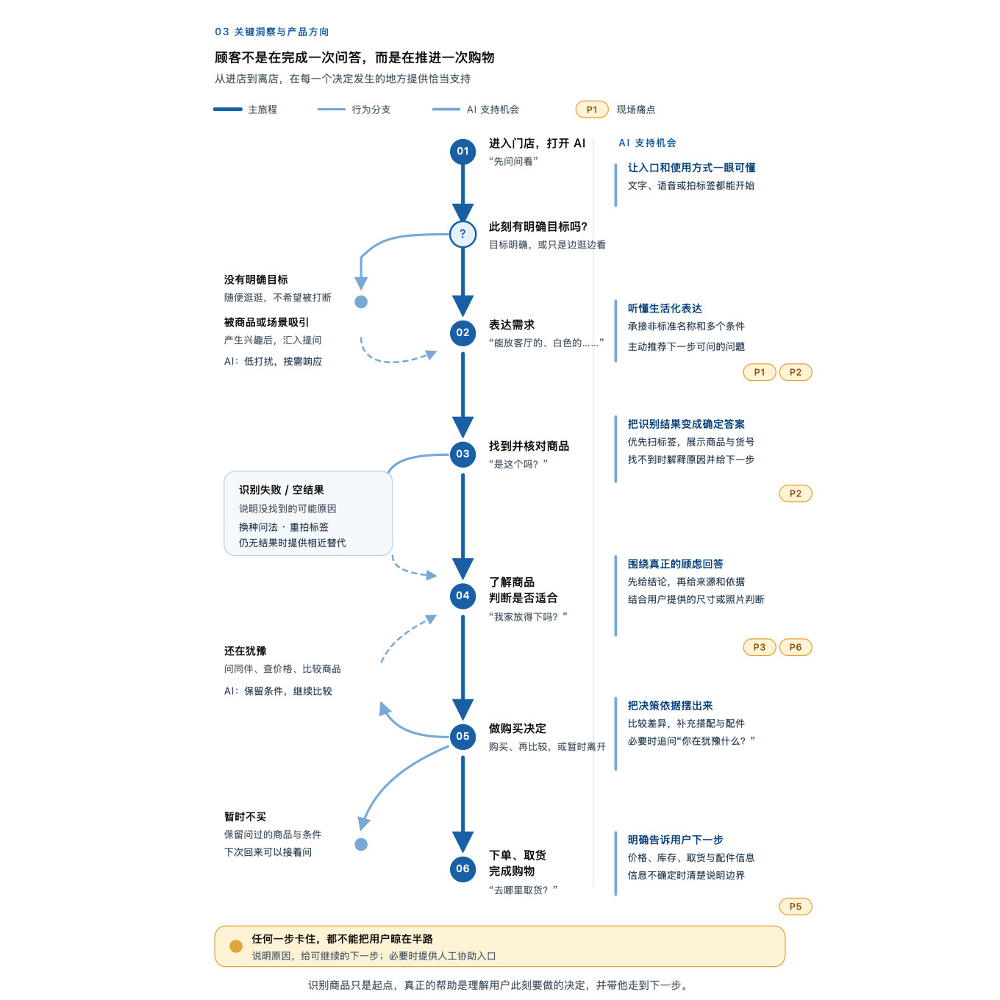
04 · QUESTION GUIDANCE
现场观察中，顾客通常直接拍照，容易错过相机页角落的问题入口。拍摄之后，页面也没有提供可以直接选择的问题。
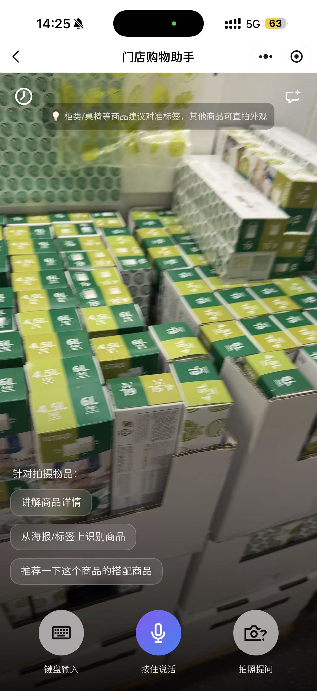
进入相机后，顾客的注意力往往集中在取景和眼前的商品上。
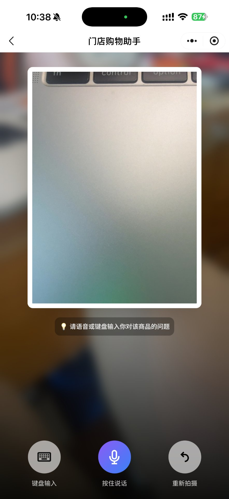
拍完后缺少清晰的下一步提示，用户需要先想好问什么，再选择输入方式。
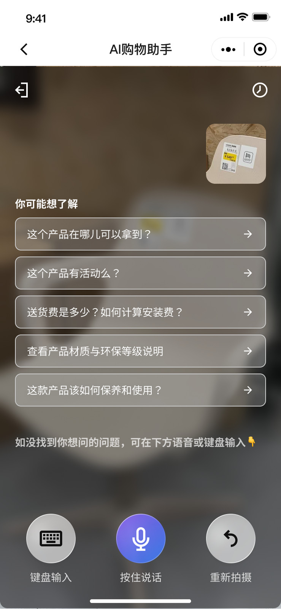
顾客可以从商品位置、使用方法等问题开始，也可以使用语音或文字。
顺着顾客先拍照的习惯，在拍摄前后提供问题建议。拍摄后，用户面对具体商品，可以直接选择常见问题，也可以继续自由提问，减少思考和操作上的停顿。
05 · PRODUCT RECOGNITION
调研中，顾客拍摄实物时遇到识别错误。一个案例中，改拍商品标签后才识别正确。因此，我探索引导用户拍清价签和货号。
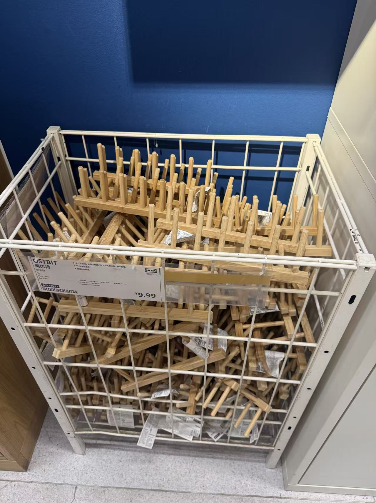
顾客拍摄门店里的盘子架。
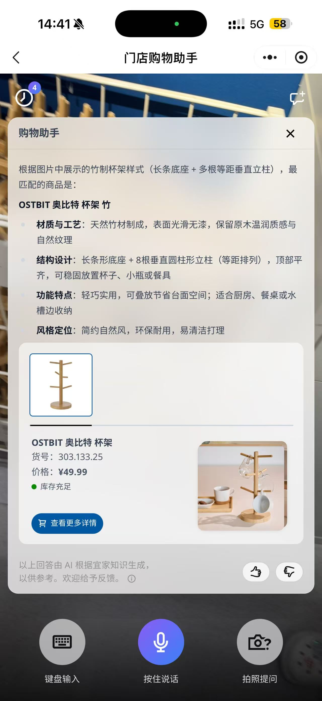
系统返回了另一款杯架。
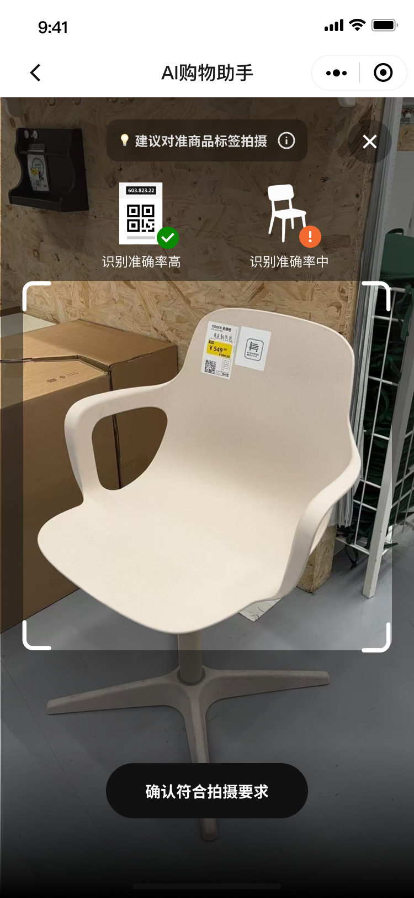
引导用户对准商品标签。
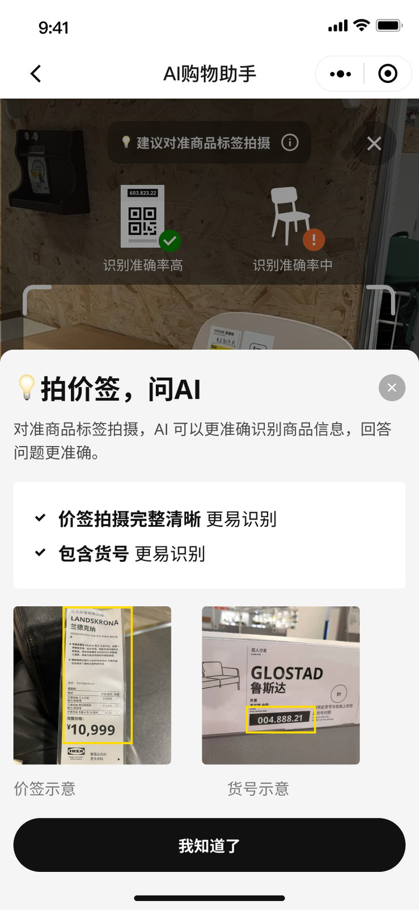
说明价签、货号的作用并展示示例。
识别错误后，用户花时间等待，却可能得到不相关的回答，还需要重新尝试。价签上的货号提供了更明确的商品线索，帮助 AI 匹配目标商品，再回答用户的问题。
06 · PRODUCT LOCATION
BEFORE背景询问商品位置是门店购物中的常见需求。
当前体验AI 回答楼层和区域后，顾客还要经过商品详情、拿货方式和区域列表才能查看指引。
痛点找货步骤多，页面指引又与门店蓝色地铁图脱节，顾客仍需自己判断怎么走。
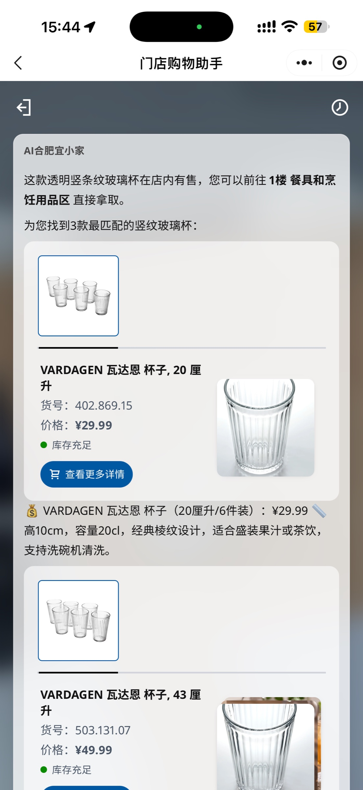
点击「查看更多详情」
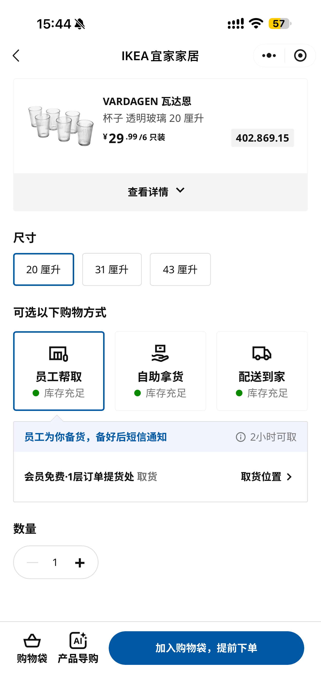
选择「自助拿货」
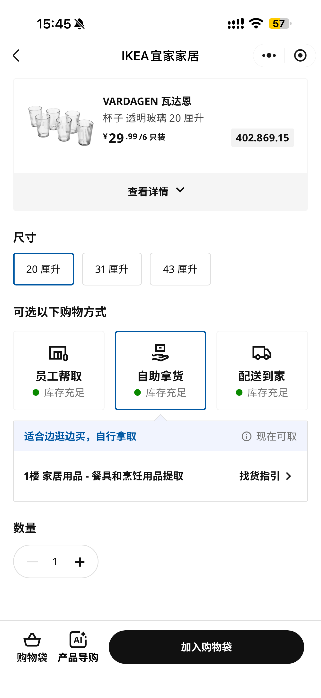
点击「找货指引」
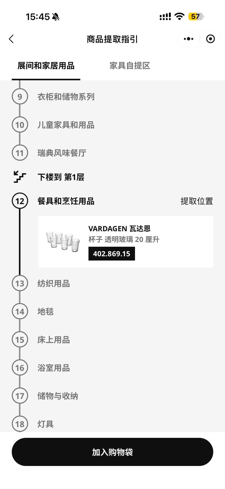
再对照门店标识判断位置
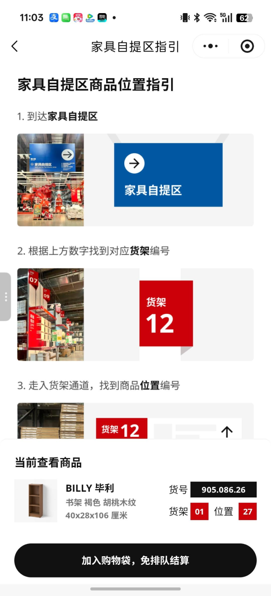
指引中的货架数字是固定图片，不会随商品变化。所有商品共用同一示意图，可能让顾客误以为图中的数字就是自己的取货位置。
将商品位置和地图直接放进 AI 回答，让顾客从提问自然走到找货。
在 AI 回答中直接查看位置和地图，减少页面跳转。
根据商品的区域、货架与位置数据呈现指引，避免固定示意数字造成混淆。
根据商品数据定位目标区域；打开地图后，还可以缩放和拖动查看。
07 · FRENCH STORE / VOICE INTERACTION
在法国门店大屏的 AI 购物助手中，我围绕语音提问的入口、识别反馈和发送动作，重新梳理了整个交互过程。
左右滑动查看完整流程 →
首页信息与文字较多，语音入口容易被忽略。
说话后文字不会立即出现，页面没有解释。
再次点击语音按钮才能发送，但没有操作提示。
发送问题后，进入回答等待状态。
左右滑动查看完整流程 →
预设问题移至下方，减少干扰并优化屏幕空间。
提示正在聆听，识别文字可能稍后出现。
文字出现后，用明确的发送入口提交问题。
展示已发送的问题，进入回答等待状态。
PROJECT REFLECTION
一次体验优化，往往从一个简短的问题开始。我尝试把需求放回真实场景，找到用户卡住的地方，再将想法做成可以看、可以体验的方案。
结合现场观察、已有记录和业务场景，理解用户的目标与遇到的困难。
梳理操作链路与关键状态，明确每一处设计要解决什么问题。
通过设计稿和交互原型展开讨论，再根据反馈持续完善细节。